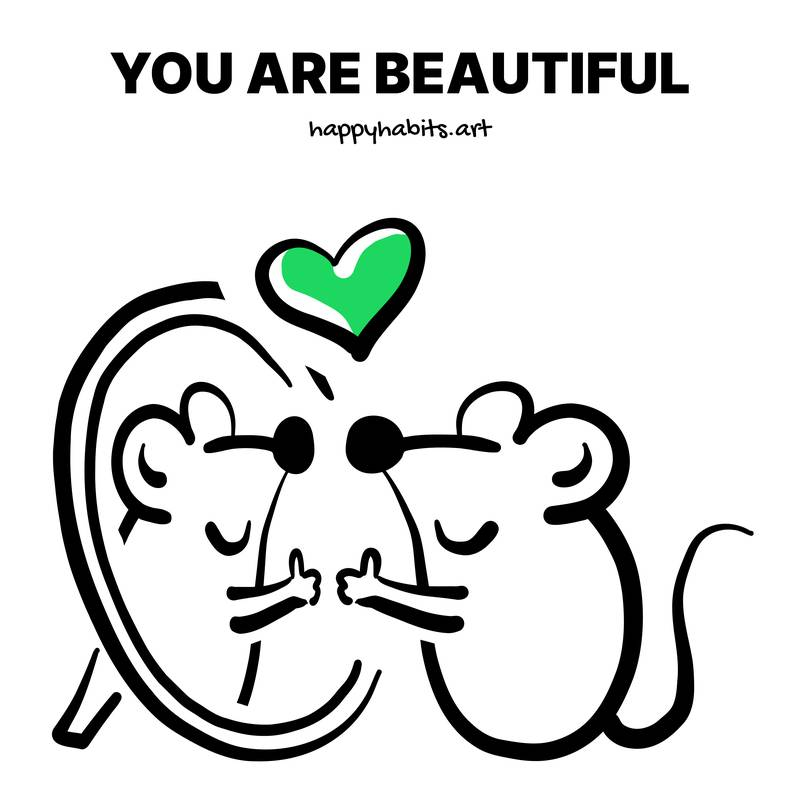
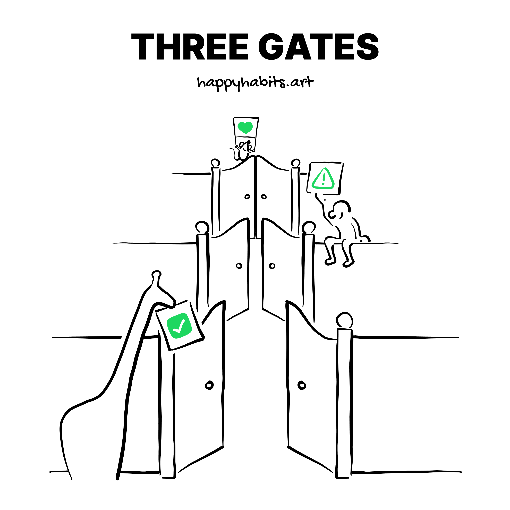
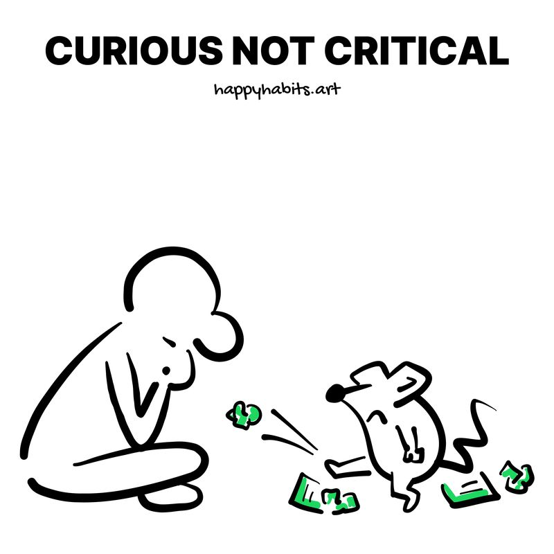

🪞 Remember, you are beautiful.
Remember that you are beautiful. We tend to be our greatest critic. Ask yourself: what is the most beautiful thing you know to be true about yourself? Before you answer, watch this three minute video. It will blow your mind Watch Now (https://www.youtube.com/watch?v=XpaOjMXyJGk)

🔨 Always eliminate number seven from the options.
When you ask people to pick a number between 1 and 10, around 80% of them will choose seven. To get a more accurate rating, remove 7 as an option. Read (3 min) The Psychology Behind The Number 7

🏓 Stop unproductive point ping pong.
Unproductive arguments are like ping pong. Hitting facts back and forth, hoping to win. For productive arguments, move away from making points and winning. Rather, focus on understanding the other person.

🤷 No only means no.
Not more, not less. Reduce fear of rejection by normalising No. Try getting 100 nos either different ones or the same one with different people . First No - go to Starbucks and ask for a free coffee . Use rejection theory to overcome fear and doubt. Sometimes, just ask why https://m.youtube.com/watch?v=-vZXgApsPCQ&feature=youtu.be

📚 ...
to get the most out of them // Read physical books. And read them intensely. Make sure they have milage. Read with a pen in your hand. Write in it. Highlight words. Fold pages. Have it tell and share your story. Touch it, feel it, smell it. Make the book truly yours. This is how you get the most out of any book.